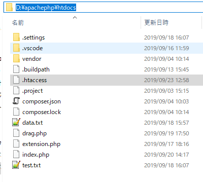
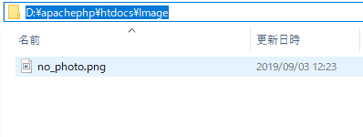
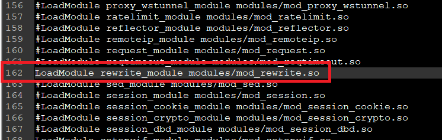
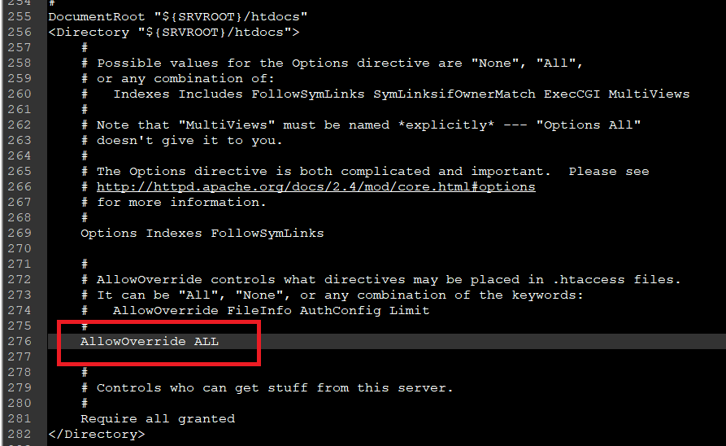
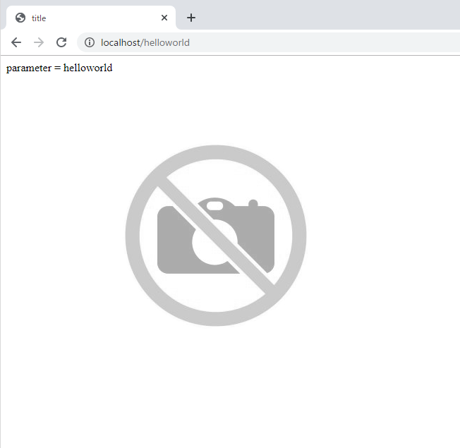
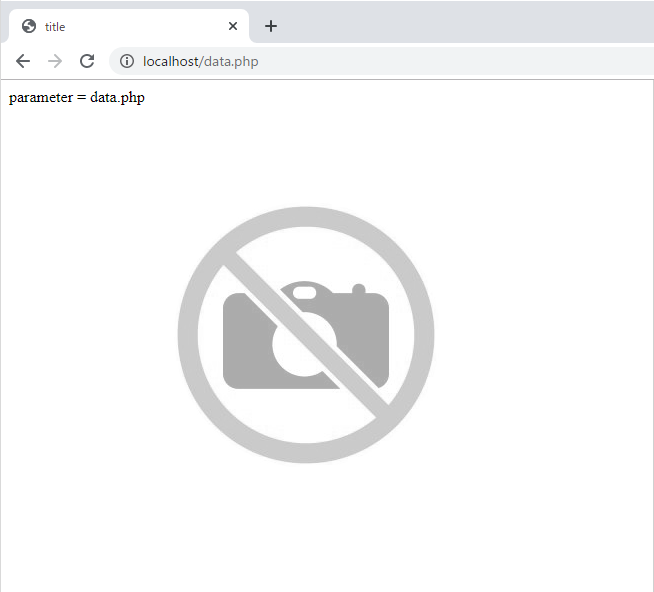

こんにちは。明月です。
前述まではブラウザでPHPファイルを接続しようと思ったら「ホスト名+ファイル名」で接続しました。つまり「index.php」ファイルを作成したら「http://localhost/index.php」で接続しました。
そのままにウェブサービスを開始しても問題ないですが、PHPファイルでクラスだけあるファイルなら空ページが見えるし、ウェブサービス側のディレクトリが漏れるのでセキュリティに考えては良くないです。
そうしたら直接にファイルを接続する方法ではなく、C#のMVCみたいにアドレスのディレクトリだけでphpを接続できるような設定ファイルがありますが、それが分散設定ファイル(.htaccess)です。
link - https://httpd.apache.org/docs/2.4/en/howto/htaccess.html
先に分散設定ファイルを使うように「.htaccess」の構造に関してしらべましょう。

上のイメージみたいにファイル名はなしで拡張子だけ「.htaccess」に生成しましょう。
# デフォルトのindexファイル設定(基本index.php)
Options -MultiViews
# アドレス再定義可否
RewriteEngine On
# ディレクトリ公開可否
Options -Indexes
# Rewriteフィルタ
RewriteCond %{REQUEST_FILENAME} !-d
RewriteCond %{REQUEST_FILENAME} !-f
RewriteCond %{REQUEST_FILENAME} !-l
RewriteCond %{REQUEST_URI} !(.js$)
RewriteCond %{REQUEST_URI} !(.css$)
RewriteCond %{REQUEST_URI} !(.ico$)
# アドレスURL再定義ルール
RewriteRule ^(.*)$ Index.php?htaccess=$1 [QSA,L]
Options -MultiViews
このオプションはrequestデフォルト要請設定と関係があります。要請URLがルート(root)、つまり「ホスト名/」で要請すると「index.php」や「index.html」を探す機能です。
そのデフォルトページは「httpd.conf」に設定しています。
「Options +MultiViews」にすると当該な機能が設定されますが、「Options -MultiViews」にするとデフォルトページを探さないです。
RewriteBase /
RewriteBaseはサーバのルート(root)ディレクトリを設定することです。
基本的に「httpd.conf」で設定されている「DocumentRoot」でルートに設定されていますが、フレームワークによって下位ディレクトリに設定する場合に設定することです。
上の例では詳細していますが、詳細した場合は「httpd.conf」に設定しているままで動きます。
RewriteEngine On
RewriteEngine Onは既存のurlパス構造を再構成してurlからデータを受取ることです。
例で「localhost/index.php?idx=1」のURL要請があります。
index.phpページにGET方式のidxパラメータに1を入れるという意味です。
でも、RewriteEngine On設定すれば「index.php」が「index.php」のページを開く意味ではなく、RewriteRuleによって意味が変わります。
Options -Indexes
Options -Indexesの場合は要請ページがなければディレクト構造を見えるように設定することです。
このオプションが省略するか「Options +Indexes」に設定した場合に要請ページがないとディレクト構造が見えます。

imageフォルダにno_photo.pngファイルを入れてブラウザで「localhost/image」を接続すると下記の結果になります。
##003##
RewriteCond
RewriteCondは下のRewriteRuleのURL再設定になるようなフィルタの役です。
つまり、「.htaccess」ファイルで上から下の方向で処理しますが、RewriteCondの結果がTrueになると「RewriteRule」で反映するし、Falseになると再設定なしで、URLアドレスままで読み込むことです。
例えば、すべてのURLのはRewriteRuleによって再設定するが、「phpinfo.php」ファイルだけ「RewriteRule」を再設定しなずに、そのまま「localhost/phpinfo.php」にしたいと思うと下記とおりに設定になります。
Options -MultiViews
RewriteEngine On
Options -Indexes
# urlで正規表現と一致(phpinfo.phpで終わる場合)すると不正マークでFalseになる。
RewriteCond %{REQUEST_URI} !(phpinfo.php$)
RewriteRule ^(.*)$ index.php?htaccess=$1 [QSA,L]
RewriteCondのパラメタはサーバ変数、正規表現になります。
使用可能なサーバ変数は下記のApacheマニュアルを参照してください。
link - http://httpd.apache.org/docs/current/mod/mod_rewrite.html#RewriteCond
様々な変数がありますが、筆者もすべて使ったことがありません。普通は「REQUEST_FILENAME」と「REQUEST_URL」が全てです。
REQUEST_URIの場合は要請されたURLのアドレス構成要素(例：/index.html)でGETの方法のQuery Stringは省略されます。
つまり、「localhost/test.php?data=123」で要請されると「/test.php」に表示されます。
REQUEST_FILENAMEの場合は要請したURLと一致するファイルのパス及びスクリプトの全体ローカルパスです。
REQUEST_FILENAMEの場合は検査式で正規表現ではなく、「-d」、「-f」、「-l」で表現しますが、「-d」はディレクトリ、「-f」はファイルの意味になります。
上の例で「REQUEST_URI」でphpinfo.phpをフィルタしましたが、「RewriteCond %{REQUEST_FILENAME} !-f」でオプションを追加すると「phpinfo.php」ファイルが存在する場合にFalseになります。
でも、この場合は特定なphpファイルだけではなく、すべてのphpファイルがフィルタに対象なので、少し意味が違いますね。
RewriteRule
RewriteRuleとは分散設定ファイルで一番重要な要請URLを最高性することです。
例えば、「localhost/123」ということで要請されると「localhost/index.php?index=123」みたいに要請ルールを変更することです。
再構成しよう正規表現のパターンで分けるパターンの値が$1,$2,$3でデータが分けます。
例えば、「^/([0-9]{4})([0-9]{2})/(.*)$」の式で作成すると「$1」は「([0-9]{4})」の「0かる9のデータで４桁」、「$2」は「([0-9]{2})」の「０から9のデータで2桁」、「$3」すべての文字列の設定になります。
後、「QSA,L」を付ける意味ではパラメタの変換ルールですが、?data=123のQuery Stringがある場合に「htaccess=test&data=123」に変更することです。
上の設定を反映するようにはhttpd.confでmod_rewrite.soのモジュールを追加しなければならないです。

その後、DocumentRootの権限でAllowOverrideをNoneからALLに修正します。

DocumentRootフォルダに「.htaccess」ファイルを作成しましょう。
# デフォルトフィアル検索機能をOFF
Options -MultiViews
# URL Rewriteエンジン起動
RewriteEngine On
# ファイルディレクトリ探索機能をOFF
Options -Indexes
# URLの「.js」、「.css」、「.ico」ファイルで終わる場合RewriteRuleに反映しない。
RewriteCond %{REQUEST_URI} !(.js$)
RewriteCond %{REQUEST_URI} !(.css$)
RewriteCond %{REQUEST_URI} !(.ico$)
RewriteRule ^(.*)$ index.php?htaccess=$1 [QSA,L]
サブフォルダ(image)に「.htaccess」ファイルを作成しましょう。
Options -MultiViews
Options -Indexes
RewriteCond %{REQUEST_FILENAME} !-d
RewriteCond %{REQUEST_FILENAME} !-f
.htaccessのファイルはフォルダ別で設定ができますが、rootに「.htaccess」ファイルがあっても上の「image」フォルダに「.htaccess」にいれると「localhost/image/...」には分散設定が再設定になります。
つまり、Javascript(js)やスタイルシート(css)、イメージなどはディレクトリを生成して「.htaccess」を別に作成して設定すると「html」の中で設定される「link」を使うことができます。
そして「index.php」で「.htaccess」を設定を確認しましょう。
<!DOCTYPE html>
<html>
<head><title>title</title></head>
<body>
<!-- URLのパスがhtaccessのパラメータに変換する。 -->
parameter = <?=$_GET["htaccess"]?>
<!-- imageフォルダのno_photo.pngファイルを読み込む。 -->
<img src="/image/no_photo.png">
</body>
</html>

上の例は私が「localhost/helloworld」で接続しました。内部で「index.php/htaccess=helloworld」に変換されます。
imageフォルダの場合は「image/.htaccess」によってファイルを読み込みました。「index.php?htaccess=image/no_photo.php」に呼ばれなかったです。
その理由は「image」フォルダの「.htaccess」が反映されたからです。

上の例は私が「localhost/data.php」で接続したことです。parameterが「data.php」に変換したことを確認できますね。
link - https://httpd.apache.org/docs/2.2/en/howto/htaccess.html
- [CakePHP] Errorページを設定する方法2020/02/20 03:00:00
- [CakePHP] Transactionを使う方法とEntityクラスを利用してInsert、Update、Deleteする方法2020/02/19 03:00:00
- [CakePHP] ORMのテーブルFetch設定2020/02/18 03:00:00
- [CakePHP] Cakeフレームワークでデータベースに接続する時に使うQuery式とEntityクラス、Tableクラス、ResultSet2020/02/17 08:16:23
- [CakePHP] データベース(MariaDB(Mysql))を接続する方法2020/02/14 03:00:00
- [PHP] namespaceとuse2020/02/13 03:00:00
- [CakePHP] RequestとResponseに関して2020/02/12 03:00:02
- [CakePHP] PHPのCakeからAjax要請がある時、jsonタイプ(json_encode関数)でResponseする方法とControllerでViewを選択する方法2020/02/08 03:00:00
- [CakePHP] MVCフレームワークのCakeをインストールする方法2020/02/07 03:00:02
- [PHP] 自動require及びincludeをする方法(spl_autoload_register)2020/02/05 03:00:00
- [PHP] 匿名関数(ラムダ式)とクロージャ(closure)2020/02/04 03:00:00
- [PHP] PHPのコーディング領域とデザイン領域を分離するテンプレートライブラリ Smarty2020/02/02 03:00:00
- [PHP] Reflection - Variable編2020/02/01 03:00:00
- [PHP] Reflection - Method編2020/01/31 03:00:00
- [PHP] Reflection - Class編2020/01/30 03:00:00
- [Python] 11. デコレーター（Decorator）を使う方法2020/06/09 17:27:18
- [Python] 10. モジュールとパッケージ(import)2020/06/08 19:07:50
- [Python] 09. 例外処理する方法2020/06/05 17:11:47
- [Python] 08. ジェネレータ(Generator)2020/06/04 18:46:08
- [Python] 07. globalとnonlocal2020/06/03 20:34:49
- [Python] 06. 関数(function) - インライン関数、callbak、ラムダ(lambda)そしてクロージャ2020/06/02 20:51:22
- [Python] 05. コンプリヘンション(Comprehension)を使用する方法2020/06/01 19:38:58
- [Python] 04. 制御文(if, while, for, break, continue)とインデント2020/05/29 21:09:08
- [Python] 03. Pythonでリスト(list)とタプル(tuple)、そしてディクショナリ(dictionary)、セット(set)2020/05/27 18:49:08
- [Python] 02. データタイプ、変数宣言そしてコメントする方法2020/05/26 18:16:52
- [Python] 01. Python3をインストールする方法(Anacondaインストール)2020/05/25 19:02:44
- [Java] HttpConnectionを利用してウェブページを取得する方法2020/05/20 23:53:24
- [Java] Jsoupを利用してXMLファイル(HTML)を扱う方法2020/05/19 19:32:21
- [C#] 非同期ソケット通信(IOCP)-APMパターン2020/05/18 18:45:37
- [C#] 非同期ソケット通信(IOCP)-EAPパターン2020/05/15 19:31:02